Major: Cognitive Science w/ Specialization in Human-Computer Interaction
Minors: Computer Science & Business
Year: Sophomore
Expected Graduation: June 2018
"Hi! I'm Kevin. As a prospective full-stack developer, I thoroughly enjoy creating simple, sleek designs that are both easy to navigate and easy on the eyes.
In my free time, I love to sing, dance, play basketball, play with my kendama, and play Pokemon Go.
People want to do good deeds, but life gets in the way. We often become so absorbed in our own activities and work that we forget to acknowledge others or even ourselves. By doing good deeds regularly and keeping track of them, we can make time and strive to create a positive environment around us and to make ourselves happy.
Inspiration
Happy, Friends, Positive, Encouragement, Commitment, Yourself, Habits, Compliments, Counting, Health
Competitive Analysis
This app displays the user’s progress using a calendar and highlights the days he/she completes a certain task, which encourages users to keep up with their habits. We can also use a calendar to record the days when they do a good deed as a way to motivate users.
Habitlist has an easy to read chart that shows data collected throughout time. With our app, there are multiple ways to represent data and a bar graph could be a nice and simple possibility. It shows the user enough information visually without too much text.
Storyboard #1
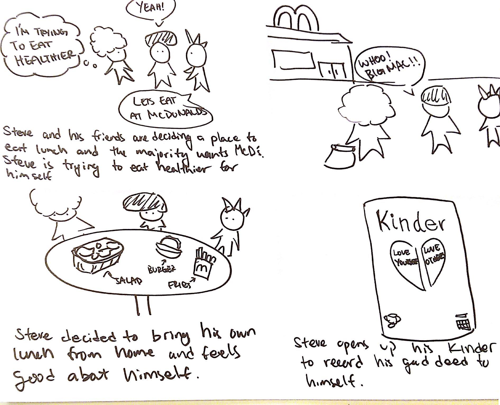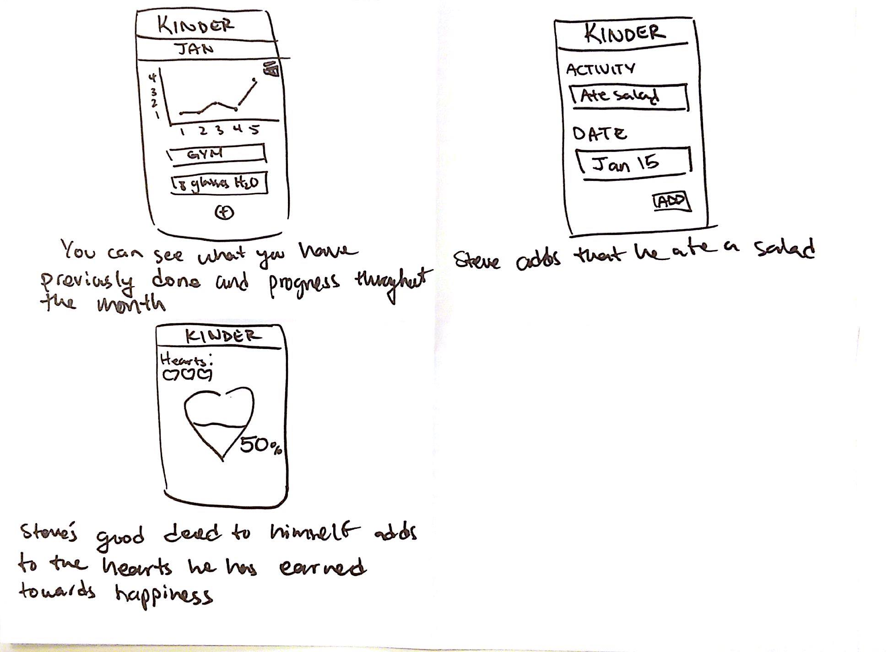
Storyboard #2
Implementation Plan:
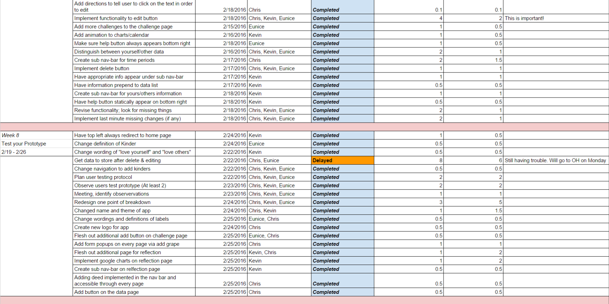
Prototype #1:
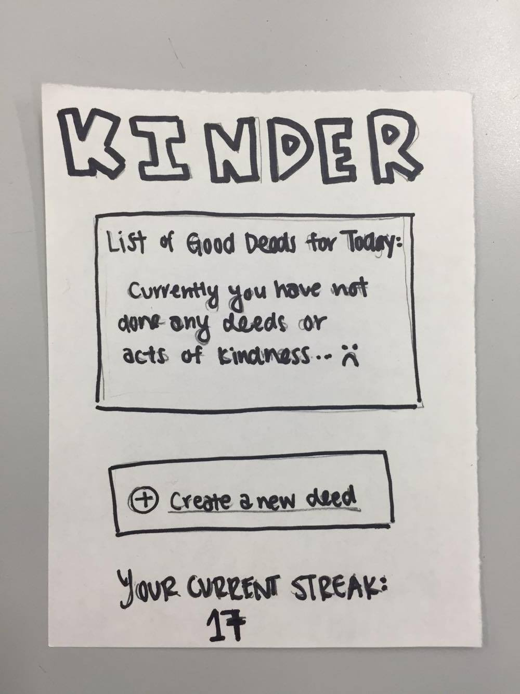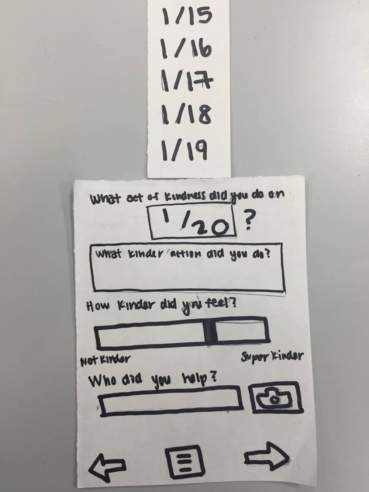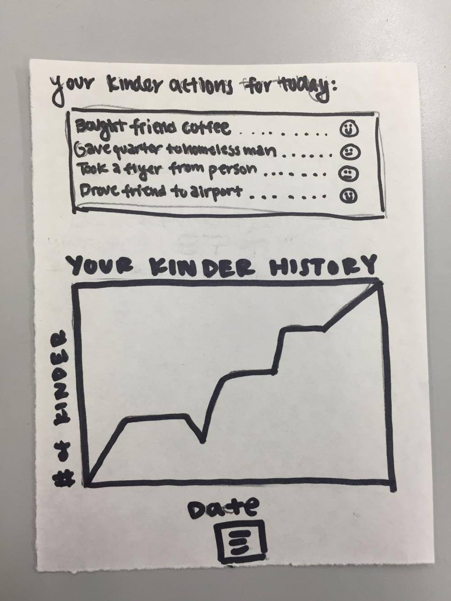
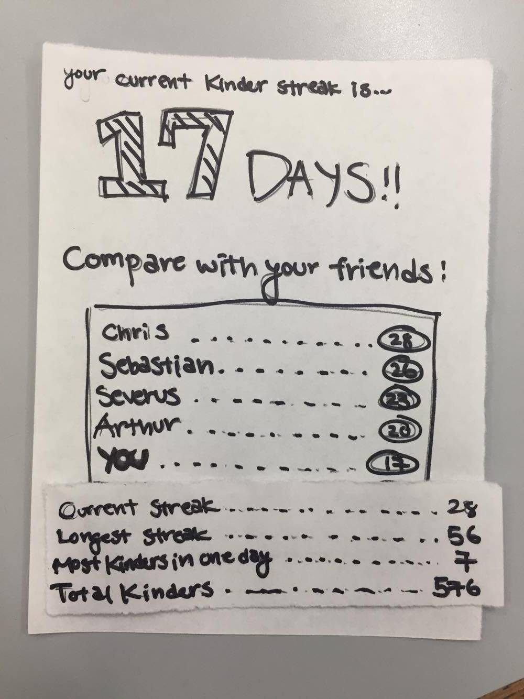
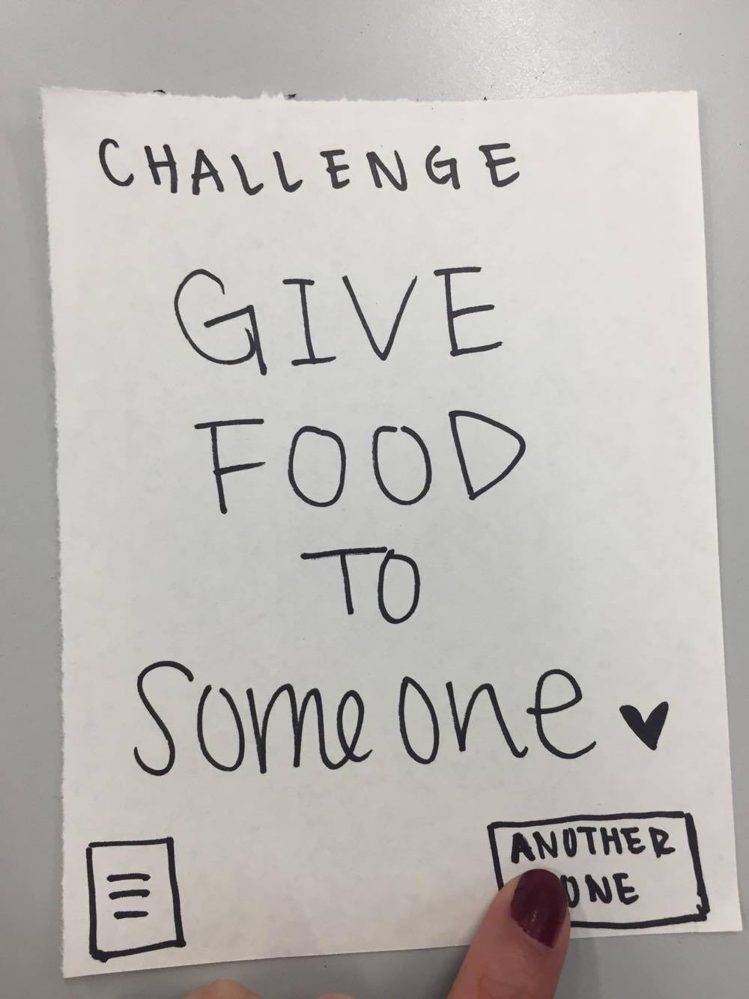
Prototype 2:
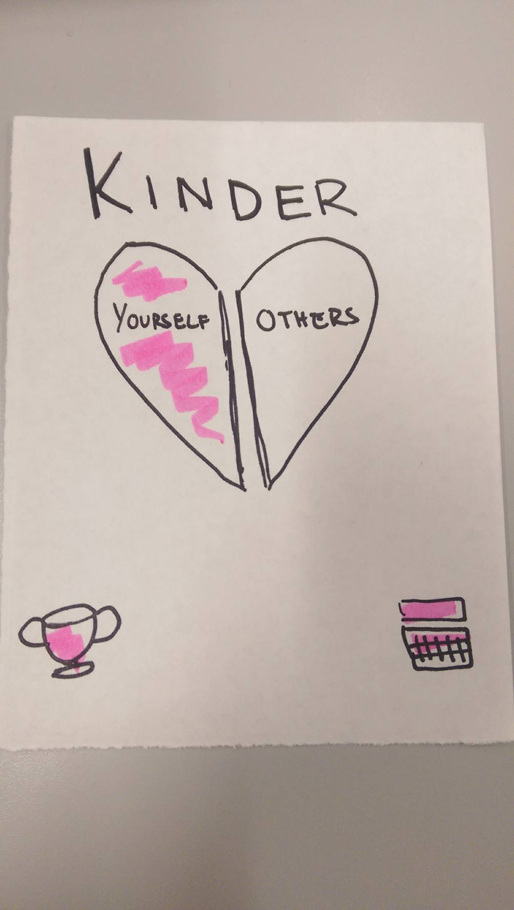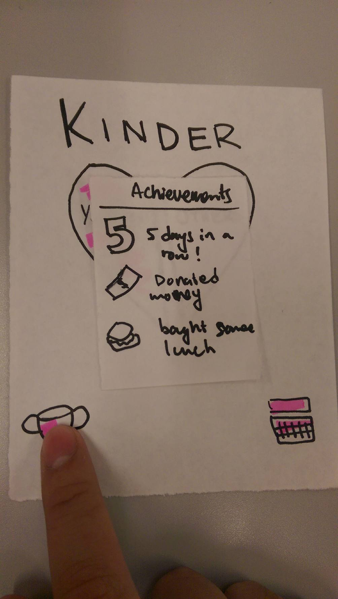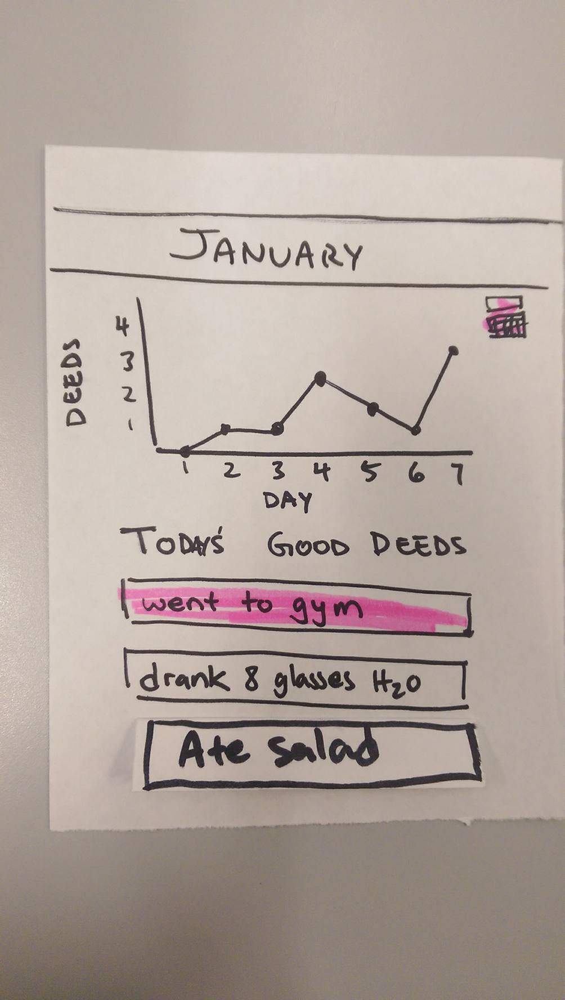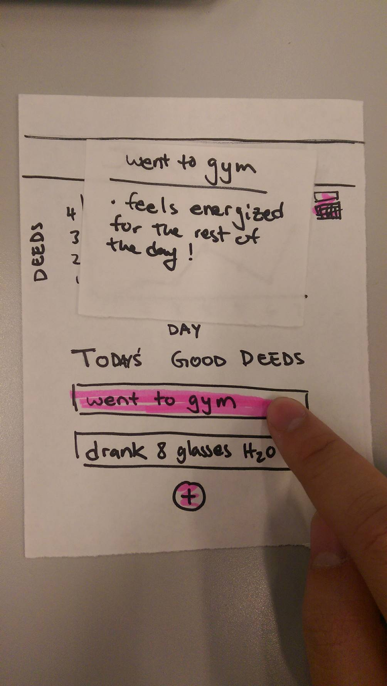
Heuristic Evaluation:
[1] Show system status
Prototype 1 has a calendar, but it is not clear the scale of the calendar (eg days, weeks, years) (2).
Prototype 1 does a good job of making it clear where you are at any point in the app, but prototype 2 leaves some confusion, particularly on the page with ‘Todays good deeds’ and the chart. The chart has no label, and the page’s purpose is vague (3).
Overall severity diagnosis
Prototype 1: 2
Prototype 2: 3
Prototype 1 is mostly clear, with a problem with chart labeling. Prototype 2 has an entire page that is confusing.
[2] Familiar metaphors and language
Prototype 2 has vague wording: “Today’s good deeds” does not clearly indicate whether these are accomplished or prospective deeds. (1)
Prototype 1 has a calendar with a y axis label of “# of kinder”. This does not clearly explain what the chart is showing. (2)
Prototype 1 includes a scale for “how kinder did you feel” from the extremes of “not kinder” to “super kinder”. I found it unclear what “super kinder” is supposed to suggest. (1)
Overal severity diagnosis
Prototype 1: 2
Prototype 2: 1
Prototype 1 uses the phrase kinder excessively as noun and adverb in a way that is not obvious and has minor clarity issues on its calender. Prototype 2 has minor clarity issues about a list of deeds.
[3] Control & freedom
Prototype 1 is missing a mechanic for going back from the history page (3). Also, the home page is not reachable after the initial opening of the app (1).
Prototype 2 has multiple issues with returning from features. Group said that you could close the calender or achievements by clicking outside the pop-up; there is no indication of this to user (2). Add deed page and history page have no way to return to home and are terminal states (4).
Overall severity diagnosis for
Prototype 1: 3
Prototype 2: 4
Both prototypes have major issues with flow: missing ways to return from pages once they are reached. Prototype 2 has a mechanic for going back from calendar that is not apparent.
[4] Consistency
Prototype 2 offers a calendar feature, but the location of the calendar button moves from top right to bottom right on different pages (1).
Prototype 1 has a camera button, but no where else is this camera mentioned or any potential output from this camera. (4)
Overall severity diagnosis
Prototype 1: 4
Prototype 2: 1
Prototype 1 has a major issue in that there is a camera feature that does not have any effect on collected data or any method to recall the camera output. Prototype 2 has a slight issue with the calendar being located in different places.
[5] Error prevention
Prototype 1 allows you to go back without any kind of confirmation while creating an entry, potentially losing form info in doing so. (2)
Prototype 2 avoids that problem, but this is a result of a larger problem explained in [7]. (*)
Prototype 2 forces the user to use a pop-up calendar to pick a date (0) and prototype 1 uses a pop-up menu (0). These both prevent errors.
Overall severity diagnosis
Prototype 1: 2
Prototype 2: 0*
Prototype 1 may cost the user time by losing data that was entered; Prototype 2 averts the issue at the cost of a larger flow issue.
[6] Recognition over recall
Prototype 1 offers a challenge systems that may provide some hint for data entry. Aside from this, both prototypes force a user to start each entry from scratch (2).
Prototype 1 and 2 do not show actual deeds that were accomplished before the current day that would be useful for remembering items to enter (2).
Overall severity diagnosis
Prototype 1: 2
Prototype 2: 2
Both prototypes share the problems of forcing all entries to be from scratch and not allowing user to read previous days’ entries.
[7] Flexibility & efficiency
Prototype 1 offers challenges that are directly related to potential entries, but there is no way to directly add the entry from the challenge page. The user must enter the entry from scratch (1).
Prototype 1 and 2 each offer a chart to view deed history, but the chart does not reach past a pre-set number of days and is not scrollable (2). Clicking on chart does nothing for either prototype. (2)
Prototype 2 includes an achievement system, but offers no way to view achievements that have not yet been earned (2).
Overall severity diagnosis
Prototype 1: 2
Prototype 2: 2
Prototype 1 offers a challenge feature but leaves some room to improve efficiency based on it, and Prototype 2 similar has a challenge feature that could be more efficient for the user. Both prototypes have a calendar feature that is very limited.
[8] Aesthetic & minimalist design
Prototype 1 offers a list of the day’s actions, but an excessive proportion of the space is filled by ellipses ……(1).
Overall severity diagnosis
Prototype 1: 1
Prototype 2: 1
Prototype 2 has a charming interface, but this comes at a cost in clarity problems. Prototype 1 has a consistent pragmatic style but some space seems filled unneccessarily.
[9] Recognize, diagnose, & recover from errors
Prototype 1 and 2 have has no way to edit or delete an entry that may have been entered incorrectly (3).
Overall severity diagnosis
Prototype 1: 3
Prototype 2: 3
The prototypes share a major problem in that entries cannot be modified once they are put in. Typos and mistaken entries are a major concern.
[10] Help
Prototype 1 and 2 each lack an explanation of what Kinder is supposed to mean or the intent of the app. Considering the uniqueness in purpose of Kinder, this may be necessary (2).
Prototype 1 has descriptive labels for most sections, but Prototype 2 relies on images to convey the message which is not always clear (2).
Overall severity diagnosis
Prototype 1: 2
Prototype 2: 2
Both prototypes leave some room for interpretation of the purpose of Kinder, and prototype 2 leaves doubt on the purpose of some pages.
[N] Non-heuristic issue
Prototype 1 includes a friend comparison feature, but it has no hints about where these friends come from. (3)
Overall severity diagnosis
Prototype 1: 3
Prototype 2: 0
Prototype 1 has a friend feature that is a strong idea, but lacks some supporting interface to actually find what friends to compare.
Summary of Heuristic Evaluation:
Prototype 1 had more serious and a higher quantity of issues, but this came as a result of having more features and greater detail; it had some issues with features that lacked follow through -the camera and friend comparison tools. Prototype 2 was focused in purpose but sometimes unclear. Its simplicity is charming but at times it sacrificed clarity in favor of that simplicity. Both prototypes shared some major flow issues that were likely oversights by the design team- the lack of back button on several pages. A good improvement on Prototype 1 could be to keep the design and workflow much simpler by taking into account the number of user clicks required to perform a specific function. Specifically, I would add a return button to pages that do not have it and a way to repeat old entries through a link in history. Prototype 2 could be improved by giving a user some amount of freedom with respect to navigation in the application and the way data is handled once entered. Again, the addition of a back button or some way to navigate backwards would be critical. A menu accessible from every page is also very effective for this. Being able to see previous entries would also substantially improve the flow, particularly if integrated with a way to repeat those entries similar to prototype 1’s suggested improvement. Heuristic evaluation seems to be extremely useful for prioritizing design flaws and establishing severity of problems. It also gives a team a helpful variety of feedback. One downside is that heuristic evaluation spends the same proportion of time on minor problems as it does on major ones, and this may not always be what the design team is seeking, particularly if they have limited resources.
Revisit Heuristic Evaluation
OVERVIEW OF HEURISTIC VIOLATIONS
1. Show System Status The chart is confusing without proper labels
2. Familiar Metaphors and Language uses the phrase kinder excessively as noun and adverb in a way that is not obvious and has minor clarity issues on its calendar
3. Control & Freedom major issues with flow: missing ways to return from pages once they are reached
4. Consistency the camera feature does not have any effect on collected data or any method to recall camera output
5. Error Prevention does not prevent user from losing data when clicking the back button
6. Recognition over Recall share the problems of forcing all entries to be from scratch and not allowing user to read previous days’ entries
7. Flexibility & Efficiency the calendar feature is very limited
8. Recognize, Diagnose & Recover from Errors entries cannot be modified once entered typos and mistaken entries are major concerns
9. Help the purpose of kinder is unclear
10. Others lacks supporting feature to connect with friends
LIST OF CONCRETE CHANGES (IN ORDER OF DECREASING SEVERITY)
1. Add an edit button that allows users to modify their past entries
2. Add a delete button that allows users to delete their past entries
3. Need a way to go back to home page throughout the app to make navigation easier
4. Implement a way for users to add friends (example: connect with Facebook)
5. Make a pop-up window warning users to save their data before they exit out
6. Implement the camera feature
7. Add a back button that allows users to return to their previous page
8. Add clear labels and scale to the chart and calendar
9. Use familiar language and explain what Kinder means
10. Rather than implementing back buttons, we can implement a navigational tool to be able to access every page
11. Implement functionality to record repeated deeds
12. Implement different view options to the calendar (day, month, or year)
13. Include a help document to clarify the purpose and functionalities of our app
Summary of goals
Our goals for the last three weeks is to be able to gather as much feedback about our web app as possible. Doing so would allow for us to receive input from multiple different sources, so that we can test the true functionality of our app. Only after receiving our feedback will we be able to make final adjustments before releasing it to the public. In week 8, we will gather as much feedback as we can from watching user testers use our app. We will be looking for specific breakdowns in our interface and try to figure out how we might fix the problems before we approach our next tester. In week 9, we will find a group of users to critique our webapp in addition to focusing a large portion of our time to cleaning up our design interface. By week 10, our app should be fully functional, fully designed, and ready for presentation to the public.
Revisit the Brief
Relating back to our brief, the purpose of our web app is to allow users to keep track of them doing good deeds so they can make time and strive to create a positive environment around us and to make ourselves happy. Since people are often busy with their own lives, they become so absorbed in their own activities and work that they forget to acknowledge others or even themselves. We aim to target individuals who want to do the right thing even when life gets in the way, and allow for individuals to have more incentive to perform good deeds for themselves and the people around them.
By using proper interviewing tools and skills, heuristic evaluations, and the valuable experience gained through labs, we have been thorough in making sure that our web app is multi-faceted, as well as making sure that it targets the five stages of personal informatics systems.
There are five aspects that we want our web app to fulfill: preparation, collection, integration, reflection, and action. For the preparation stage, our app provides an efficient way for the users to start developing good habits by doing positive actions for others and themselves. For collection and integration stages, the app can collect data easily by allowing users to record their daily activities and integrate this data into graphs and charts to provide more meaningful information for the users. Then, the users can use this valuable information to reflect on their own actions by comparing their data with their friends and family. We hope that this app will allow the users to realize that by making the time to do good deeds regularly, everyone will be happier and more successful in life.
Revisiting Competitive Analysis
With many similar webapps in the market, it will be difficult for Kinder to compete. For example, fully featured habit trackers like Momentum and HabitClock are very popular. Momentum syncs between all apple devices and has a useful feature which helps users understand when they are most productive, while HabitClock sets alarms and tracks user's morning routine to help create better morning habits. Although both apps are useful and easy to use, they are not multifaceted like ours. They only focus on the habits, but our app also records the emotional aspect of doing kind things for others as well as themselves. We want the users to not only learn about their habits of doing good deeds, but also understand how their actions affect their happiness and health. They also do not provide a way for users to connect with friends and show their friends their progress. Kinder, however, allows you to compare your result with your friends and brings in the social aspect to our app. By creating competitions between friends and generating new ideas of good deeds, it provides an incentive for the users to complete good deeds and makes the process more fun. Finally, Kinder follows the five stages of personal informatics systems which helps users analyze their actions and motives them to change their lives.
Supporting Info
We implore our user to play with the streaks function, as we feel like incentive is fundamental for people to actually get started with this webapp. In the event that our user base becomes larger, individuals will be urged to compete with their friends to see who can complete the most deeds; with this practice, we hope that this will guide users to understand the meaning behind doing good deeds in the first place.
In-Person User Testing
Usability Script
First have users add a new event to record a good deed that they’ve done
Have users edit their most recent entry
Add another entry
Users navigate to the streak page and compare their streaks with friends
Users navigate to the challenge page, do the challenge, and record it
Delete old entries
Leave users to explore
Things to keep an eye out for:
Are users able to figure out how to edit their entries?
Can they easily understand the flow of the app and the purpose of each page without any help?
Is it clear that the entries are clickable to see more details?
What are users confused about?
Do users understand the difference between love yourself and love others?
What kind of features would the user want?
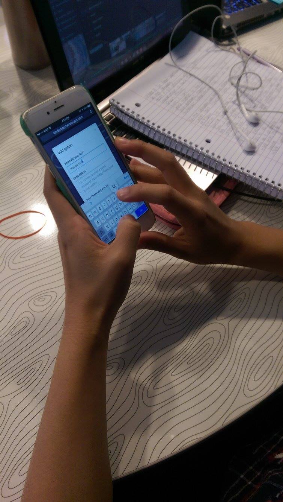
Breakdown 1:We told the user to edit their old entries, but the user did not know how to edit. The user had to press the screen multiple of times before learning that you can just directly edit the text.
Other notes from person 1:
-struggle to edit, had to press couple of times
-adding another entry is not intuitive..(has to go back to the home screen first..confused why it brought her back to the home screen)
-nothing to do when comparing streaks with friends
-navigating back to home from the challenge page can be a hassle
-didn’t understand love yourself and love other
-want total grapes in the data page
-new feature: goal setting
Breakdown 2: We told the user to complete the challenge and add it to their data, but the person didn’t know where to go after completing the challenge. The person just stared at the screen for awhile. Rather than looking for help using the help button, the person decided ask us directly.
Other notes from person 2:
-dont know if the scale is out of what…
-took awhile to figure out how to edit entries
-pressed back button instead of going to the home page to add another event (super confused)
-don’t know how to record it after doing the challenge
-annoying to retype everything..should have autofill
-had to learn the flow to understand…
-want more incentive
-hard for someone who doesn’t use iphone
Compiling Results
Overall Issues:
-fix the scale to make it more clear (maybe just add text/labels)
-fix edit button
-need to add an add button on the data page and challenge page
-add button under at bottom of yours and other grapes for easy access
-some way to connect to fb (can be wizard of oz-ed)
-more features when comparing with friends
-more incentive in general
-have the ability to set goals
-love yourself and love others are confusing
Changes in this iteration
-we combined the “love yourself” and “love others” buttons into one button/form for simplicity and less confusion
-changed the navigation, so the logo will link back to the home page
-we added categories to each deed in order to give the user a better way to reflect on what kind of good deeds make them happier
-we included being able to add good deed from any page instead of having to navigate to the home page every time
-added a button to add new good deed at the bottom of the data page
-added option to add grape from every page via navbar
-we added a new reflection page, where the user will be able to see what kind of good deed makes them happier
Changes planned for next iteration
-finishing functionality for the Reflections page to change depending on what you want to see
-continue working on full edit/delete functionality
Creating a meaningful redesign for A/B Testing
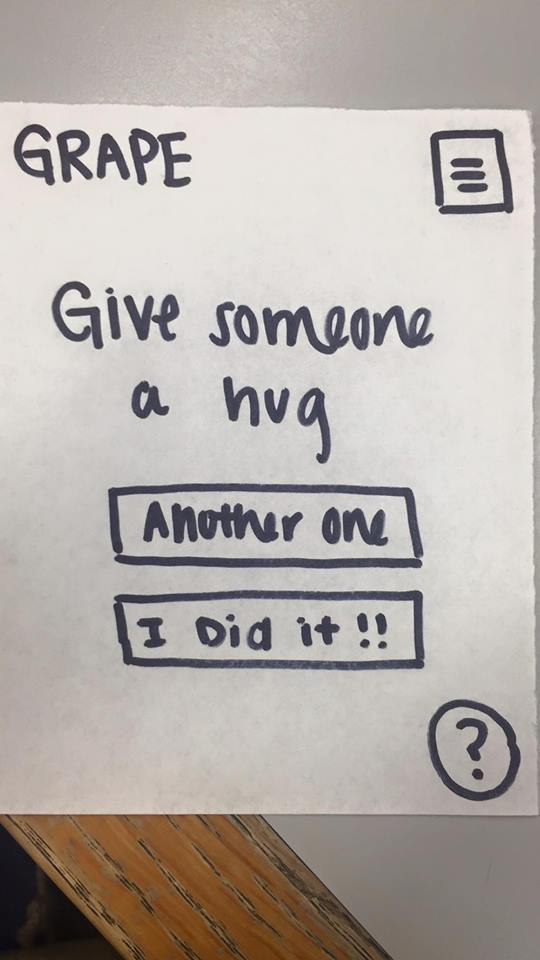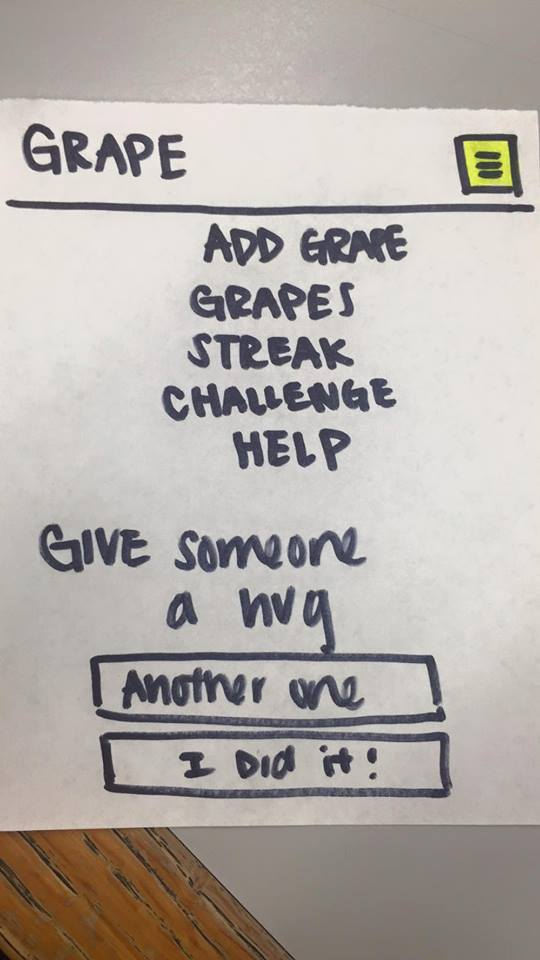
The image on the left shows how the help button is originally located in the bottom right corner, and the image on the right shows that we are adding a help button in the navigation bar.We have to redesign the location of the help button because people didn’t use the help button at all even when they had questions about the app during the in-person test.
Online Test Plan
Our in-person test showed that users were not inclined to use the help button even if they were confused and didn’t know what to do when trying to complete a task. Thus, this makes us wonder if it is because of the location of the help button or if it is because we were standing next to them when they were asked to complete a task. Currently, the location of the help button is in the bottom right corner of the screen, and there is one on every page. To understand the cause of this issue, we decided to do A/B Testing for two different interfaces that have the help button in different locations. The first interface, the “A”, will be the original implementation of the help button which is located in the bottom right corner of the screen. For the second interface, the “B”, we will move the help button to the navigation bar so people will be more aware that we have a help documentation available. In this test, the independent variable is the location of the help button while the dependent variable is the number of clicks on the help button. Our null hypothesis is that the two different interfaces will result in the same amount of clicks, and our alternative, and our alternative hypothesis is that the the amount of clicks in one interface is greater than the other one. If one interface has significantly more clicks on the help button than the other one, we can reject the null hypothesis and infer that the interface with more clicks better convey the idea that a help documentation is available to the users. If both interfaces have the similar amount of clicks on the help button, then the location of the help button isn’t too important in the accessibility of a help documentation. Using google analytics, we can keep track of how many times the user click the help button and see which interface has more clicks.
Online Test Results
Observed
Dropdown
Buttons
Total
Converted
4
9
13
Not Converted
11
18
29
Total
15
27
42
There were a total of 42 users: 15 had the dropdown bar and 27 had buttons on their reflection page. 4 out of 15 people changed category using the dropdown bar, while 9 out of 27 people changed category using the buttons.
Expected
Dropdown
Buttons
Converted
(15*13)/42 = 4.643
(27*13)/42 = 9
Not Converted
(15*29)/42 = 10.357
(27*29/42 = 18
Based on the number of participants in our study, we expected 4.643/10.357 people to convert using the dropdown bar and half the people to convert using the buttons. These expected values are very close to what we observed.
freedom of degrees = 1
Chi-Squared Test
0.089
0.049
0.04
0.022
The null hypothesis that our group decided on was that there is no difference between buttons and the dropdown bar on the reflections page. We used chi squared to test this hypothesis. The degrees of freedom is defined as (rows-1)*(col-1), which in our case equals 1. Based on the chi squared chart, the chi squared value of with 1 degree of freedom is 3.84. Based on our test, our calculated value was 0.2 (as shown above), which is far from the threshold of 3.84 needed to consider the variation as a significant change. Therefore, we fail to reject the null hypothesis that there is no difference between the buttons and the dropdown bar.
List of Potential Revisions:
On the reflection page, change the dropdown menu to buttons
Although our A/B test result shows that the difference between dropdown and buttons is not that significant, we decide to use buttons instead because more people use the buttons than the dropdown bar. Buttons also allow the users to easily see the different categories all at once. Instead of clicking twice in the dropdown bar, users only have to click once to change category. Lastly, buttons are more visually appealing.
Implement error messages
Currently users can submit new deeds without entering the correct information. Users can type whatever they want even if it doesn’t make sense. We want to tell the users if they type in something wrong so they don’t have to go back and edit it later. We also want them to record how happy their deed makes them feel so our reflection page is more effective and useful to the users.
Add a help button to the navigation menu
Our a/b test result shows that users are more likely to click and use the app more when they see buttons or find things that they can interact with. Thus, we decide to add a help button to the navigation menu so users are more aware that a help documentation is available. Also, our in-person test shows that users like to ask us for help instead looking at the help documentation first, so we think that this change will improve this issue.
Use more familiar words and phrases
People get confused and don’t understand what “grape” means. When they see the “create a new grape” button, they are not sure what they are creating or what information it is looking for. As a result, users click on different things randomly to find a more clear explanation. However, we want our app to have a nice flow to it to make the user experience more friendly. For example, on the reflection page, we want users to click on different categories so they can see which category makes them the happiest.
Pitch:
“Hey nice shirt!” *throws grape*
“Hey nice face!” *throws grape*
Hi. We define each grape as an act of kindness that brings sunshine into everyone’s lives. That’s why, we developers of Grape set out to encourage individuals not only to making sure to do good deeds for other people, but also making sure to treat yourself. We look at your information and provide an array of analytics based on your personal acts of kindness. Does working out make you feel Grape? Maybe hugging your friend makes you feel super Grape! Start building your grapevine today, and join us in our journey to make the world a better place.
Poster presentation:
Chris: This is our first time user landing page, where we basically describe our vision of performing different acts of kindness. As soon as you click the “start your grapevine” page, the user is redirected to the homepage, where they can add a grape. We decided to closely follow the five stages of personal informatics, the first steps being preparation and collection. Here, the user can add whether the good deed was for themselves or others, a title, a description, a category, and a rating, which will all be reflected later on.
Eunice: As you can see, the collected data is implemented in the form of a visual graph. In addition to this, the user can also see their acts of kindness uniformly categorized into different time frames of days, weeks, and months. The next page, the reflection page, is basically the bread and butter of our app. It receives the user’s personal information and shows individuals which categories made them feel the least and the most grape, as well as reflective questions to help them get the most out of their informatics.
Kevin: The last few refining points of our app include the Streaks page, the Grapevine, and the Challenge page. The streaks page and the Grapevine serve to add a little incentive for users to continually use the app. The streaks page allows the user to compare their grapes with all their friends, while the Grapevine pushes the user to want to add more grapes to grow their vine. The last little bit of our app is the challenge page, which addresses user action. Basically, if the user feels like they don’t know what act of kindness to complete, they can choose one of our randomly generated acts of kindness.